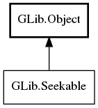

GLib.Seekable Reference Manual
Packages
gio-2.0
GLib
Seekable
can_seek
can_truncate
seek
tell
truncate
Seekable
Object Hierarchy:

Description:
public
interface
Seekable
:
Object
All known implementing classes:
BufferedInputStream
BufferedOutputStream
DataInputStream
DataOutputStream
FileIOStream
FileInputStream
FileOutputStream
MemoryInputStream
MemoryOutputStream
Namespace:
GLib
Package:
gio-2.0
Content:
Methods:
public
abstract
bool
can_seek
()
public
abstract
bool
can_truncate
()
public
abstract
bool
seek
(
int64
offset,
SeekType
type,
Cancellable
? cancellable =
null
)
throws
Error
public
abstract
int64
tell
()
public
abstract
bool
truncate
(
int64
offset,
Cancellable
? cancellable =
null
)
throws
Error